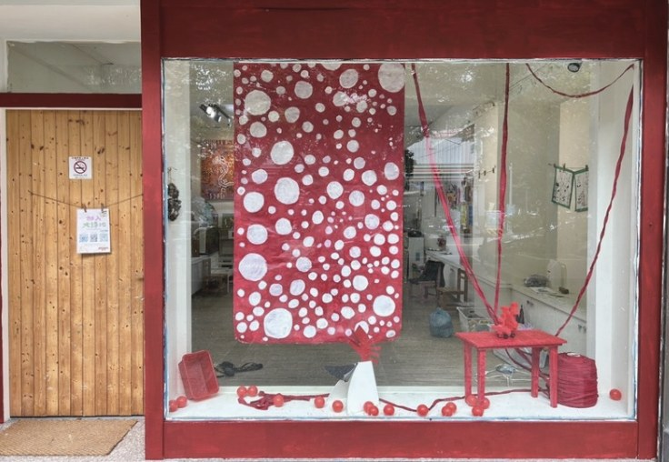

昌平教室
地址台中市北屯區昌平路一段77號
北屯區 · 昌平路一段
想了解課程、預約體驗，或詢問家長工作坊？歡迎透過 LINE 或電話與我們聊聊。
來訪前請先透過電話或 LINE 預約，讓我們為你安排合適的介紹與體驗時間。
大綠地的教室不只是上課空間，也是一個會持續展出孩子創作、讓家長感受課堂氛圍的地方。

此網站目前為原型版本，送出後會顯示完成提示；正式上線前可再串接 Email 或表單服務。
可以，加入 LINE 告訴我們孩子年齡與方便時段，我們會協助安排適合的體驗課。
一般課程所需材料由教室準備，若有特殊主題會在課前另行通知。
依孩子年齡與課程類型而定。感官啟蒙與親子共創通常會安排家長參與，其他課程可先和老師討論。
核心教學理念一致，實際班級與時段會依教室安排不同，歡迎直接詢問最新課表。